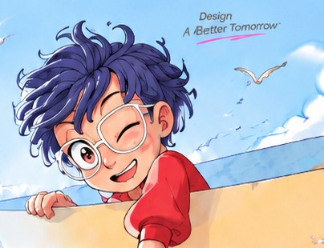

Leticia Valdez
🌐

PHOTO EDITING DESIGNER
Technical Sharing : Portfolio Showcase
👇
✈
Telegram
💬
☎
WhatsApp
L
Line
✉
iMessage
⚡
Messenger
K
KakaoTalk
◉
Selected Works
About Me
Skills
Software
Ps
Ai
Pr
Id
Ae
Fg
‹
5
🎨
Leticia Valdez ·